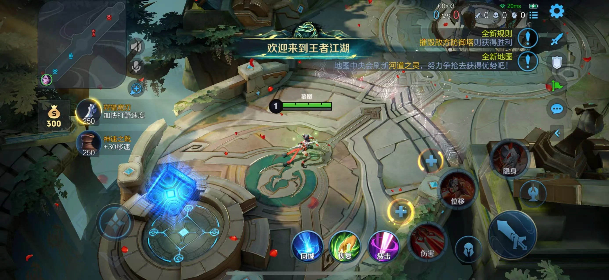
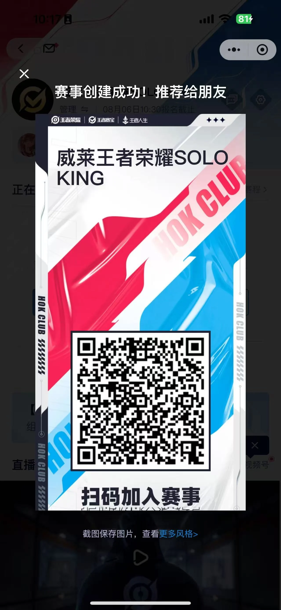
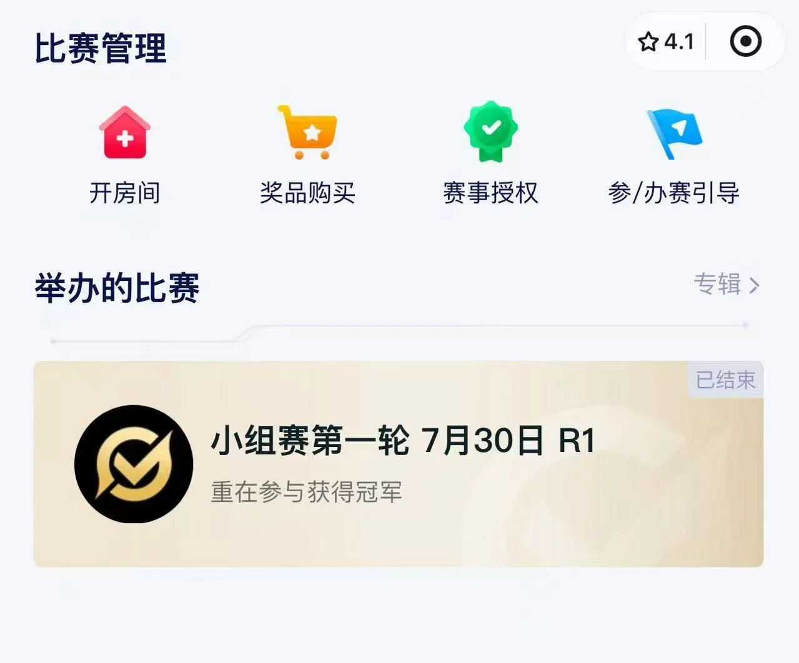
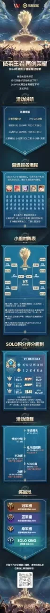
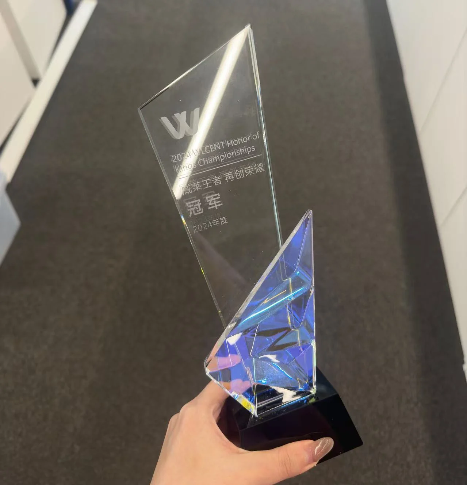

PROJECT 03 / 2024
威莱王者 · 再创荣耀
2024 威莱王者荣耀冠军杯
员工连接 × 跨部门协作 × 电竞体验

项目简介
威莱王者
再创荣耀。
日常工作中，不同部门的沟通往往围绕具体业务展开。我希望借助《王者荣耀》的团队协作、即时沟通与共同目标，为员工创造一个在工作之外认识彼此、交流协作的机会。
竞技是活动的形式，人与人之间的连接才是活动设计的核心。
活动策划 · 赛事机制设计 · 员工参与设计 · 项目统筹 · 赛事运营 · 项目执行
如果比赛只是为了决出冠军，
那它对员工活动来说还不够。
策划初期，我先思考活动能够为员工创造什么价值。游戏中的分工、判断与协作，让共同兴趣成为认识彼此的起点，也让一次比赛成为建立沟通的机会。
竞技是形式，连接才是目的。

从员工的参与体验出发。
让同事成为队友
鼓励不同部门员工组成 5 人战队，在共同目标中自然沟通与协作。
兼顾工作与体验
避开业务繁忙期，前期轻量参与，决赛保留完整的竞技与观赛体验。
提供不同参与入口
5V5 强调团队协作，SOLO KING 提供个人挑战，让员工按兴趣选择。

把设计原则，转化成真正能够参与的赛事。
将员工连接、参与成本与体验差异，落实到组队方式、赛事节奏及参与入口中。
打破部门边界
通过跨部门组队，让沟通与协作自然发生。
降低参与成本
结合业务周期规划时间，根据赛事阶段调整节奏。
提供不同参与方式
通过团队赛与 SOLO KING，提供不同参与入口。

让一套赛事设计，真正运行起来。
将整体方案拆解为员工报名、队伍组建、比赛安排、晋级、决赛、个人赛及奖励等环节，持续推进赛事宣传、员工沟通与赛事运营。
让前期思路能够被员工理解、被工作人员执行，最终形成完整的活动体验。
- 活动目标
- 参与机制
- 赛事规则
- 员工报名
- 赛事运营
- 最终执行

从策划思路到执行依据
报名、对阵、个人赛、赛事流程与奖励被整理为统一的信息载体，帮助员工理解参与方式，也为赛事运营提供依据。
海报作为活动落地的材料记录，呈现最终规则与信息组织。

从「举办一场比赛」，
到「设计一次员工连接」。
我希望员工活动不只是提供娱乐，而是通过机制设计，让沟通、协作与参与自然发生。
我的工作
- 洞察员工需求
- 定义活动目标
- 设计参与机制
- 规划赛事节奏
- 推动活动执行
活动策划 · 机制设计 · 员工参与 · 项目统筹 · 赛事运营 · 项目执行